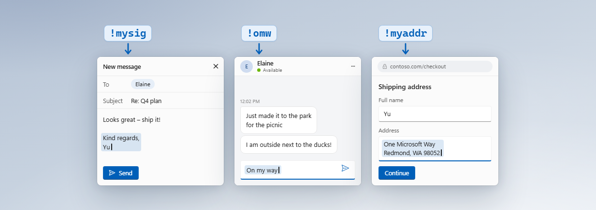

Short or long
A word, an address or a whole email. Text Expander types short snippets, pastes longer ones and then puts your clipboard back.
Part of the PowerToys suite of tools for Windows
Type a short trigger and get the full text, in any app.

Open PowerToys Settings, select Text Expander and turn on Enable Text Expander.
Select New snippet, then give it a trigger, such as !mysig, and the text it should turn into. You can also start from an example.
In email, chat, your browser or any other app, Text Expander swaps the trigger for your text as you type.
A word, an address or a whole email. Text Expander types short snippets, pastes longer ones and then puts your clipboard back.
Add the date or time in the format you like, what’s on your clipboard, or something Text Expander asks you each time the snippet runs.
Mark a spot with $|$ and the cursor lands there after the snippet expands, ready for you to keep typing.
Didn’t mean to expand it? Press Ctrl+Z straight away to get back what you typed.
Keep the same snippets on every PC with OneDrive, or keep them in a folder from another sync app.
Your snippets live in one plain text file that you can edit in Settings or in any text editor. Changes apply as soon as you save.
The easiest way is New snippet in Settings. You can also edit the snippet file in any text editor. Write one snippet per line, as trigger=replacement. For text with several lines, put trigger<<< on the line before it and >>> on the line after it.
!myemail=you@example.com
!mysig=Best regards,\nYour Name
!today={{date:dddd, MMMM d}}
!reply<<<
Hi {{prompt:Name}},
Thanks for getting in touch. $|$
Best regards,
Your Name
>>>Start triggers with a symbol such as ! so they don’t fire in the middle of a word. In a one-line snippet, \n starts a new line and \t adds a tab.
Add these anywhere in a snippet. In Settings, Insert variable adds them for you, and the preview shows what the snippet will type.
| Variable | What it adds | Example |
|---|---|---|
{{date}} | Today’s date | 10/18/26 |
{{time}} | The time | 09:41 AM |
{{datetime}} | The date and time | 10/18/26 09:41 AM |
{{isodate}} | The date as year, month and day | 2026-10-18 |
{{date:dddd}} | The date in a format you choose. dddd is the day of the week, and MMMM d, yyyy is the full date. | Sunday |
{{clipboard}} | What’s on your clipboard | Whatever you copied last |
{{prompt:Name}} | Something you type each time the snippet runs. Text Expander asks for it using your label, here “Name”. | A small window asks for “Name” |
$|$ | Where the cursor goes once the snippet expands | The cursor waits there |
In a plain text file called PowerToysTextExpanderSnippets.txt. Unless you sync it, it’s in %LOCALAPPDATA%\. Text Expander reloads it whenever you save, so there’s nothing to restart.
Yes. In Text Expander settings, turn on Sync across PCs to keep your snippets in OneDrive. Using another sync app? Choose its folder instead.
In most apps. Snippets don’t expand in apps running as administrator or in standard Windows password boxes. They can still expand in password fields on websites and in some apps.
Some apps block pasting. In Text Expander settings, under Advanced, set Insertion method to Always type.
Start your triggers with a symbol such as !, or turn on Wait for the whole word under Advanced. Text Expander then waits for a space or punctuation before it expands, and leaves the space or punctuation in place.
Yes. Right after a snippet expands, press Ctrl+Z to change it back to what you typed. This doesn’t work for snippets that use your clipboard or ask you to type something.
No. It runs as you. To edit snippets, PowerToys needs to run without administrator rights.
Yes. Administrators can turn off Text Expander with group policy, using the ConfigureEnabledUtilityTextExpander policy ID. Learn more in the PowerToys group policy documentation.
Open an issue in the PowerToys repository on GitHub.